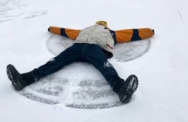
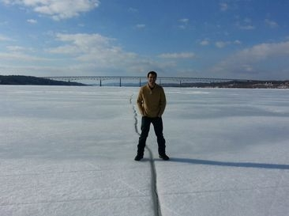

About KingstonSnows
The culmination of a kid's love for weather and appreciation of snow days.
| Mission. The primary mission of KingstonSnows is to anticipate and communicate winter weather impacts for Kingston, New York and the surrounding Ulster County region. |
 |
| Beginning. I became interested in weather in late 2003. As a product of the Kingston City School District, I also learned the value of snow days at a young age. Over the years, those two aspects have fed off each other to grow my interest for weather into quite the hobby. I have kept a record of all Kingston snowfalls and their local impacts since November 2004. |
|
| Pathway. I began issuing school cancellation probabilities for the Kingston City School District during winter of 2004-2005. These predictions were based off various weather forecasts, and were distributed to a small group of close friends as an email blast. In June 2008 I began publishing my predictions online before adopting the name "KingstonSnows" in January 2009. I've been issuing my own independent weather forecasts since November 2013 and have operated under the KingstonSnows.com domain since October 2020. |
 |
| Motivation. I continue to follow the weather after all these years, because it's what I enjoy. |
-Ethan Burwell
Kingston High School, '11
Ulster Community College, '14
B.S. Atmospheric Science, Cornell University, '16
M.S. Emergency Management, Millersville University, '21
KingstonSnows | Kingston, New York
Website built by Ethan Burwell